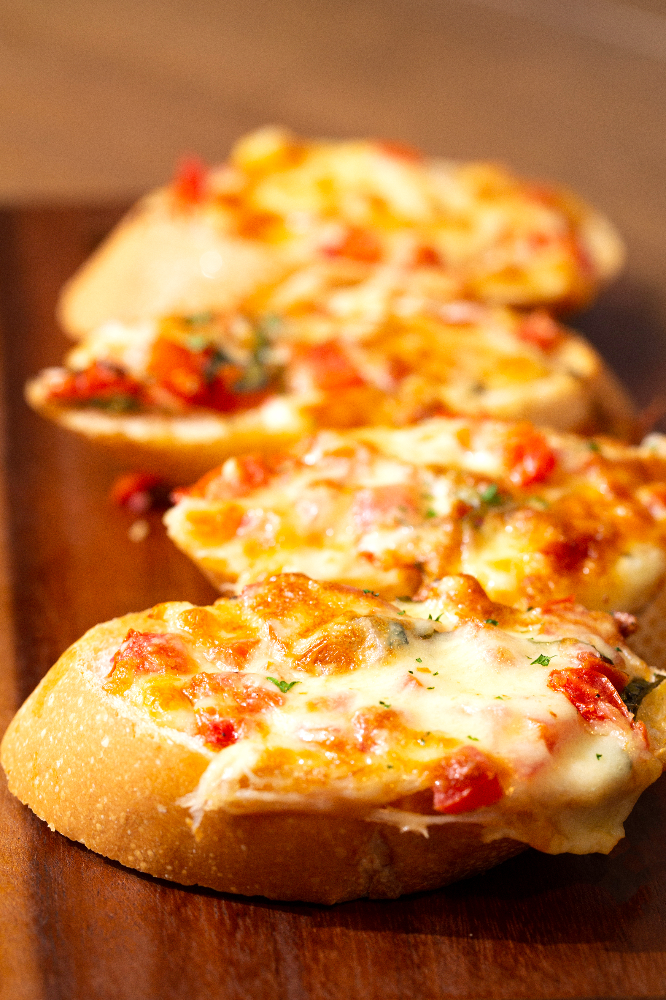

Fast English Muffins Pizza

Description
This English muffin pizza recipe is very fast and kid-friendly—they can make them with pizza sauce, cheese, and their choice of topping, and all you have to do is bake them!
Ingredients
- 4 English muffins,split
- 1/2 cup canned pizza sauce
- 2 cups shredded mozzarella cheese
- 16 slices pepperoni sausage
Steps
- Gather all ingredients. Preheat the oven to 375 degrees F(190 degrees C)
- Arrange tha English muffins halves cut-side up on a baking sheet
- Spread pizza sauce evenly on top of each on
- Sprinkle with mozzarella cheese and top with pepperoni slices
- Bake in the preheated oven until cheese is melted and browned on the edges, about 10 minutes